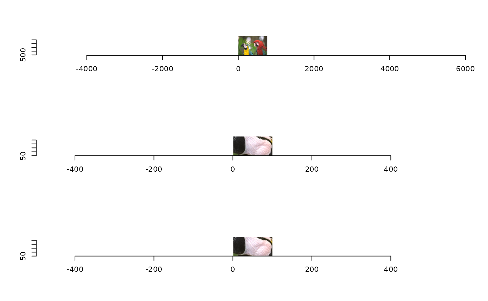

Locate needle image matrix position in a haystack_image matrix. Helper function for locate_image().
Source: R/locate_image.R
locate_ndl_in_hay.RdLocate needle image matrix position in a haystack_image matrix.
Helper function for locate_image().
Examples
haystack_image <- imager::load.example("parrots")
w <- 100
h <- 50
needle_image <- crop_image(haystack_image, 129, 257, w, h)
hay_mt <- image2gray_matrix(haystack_image)
ndl_mt <- image2gray_matrix(needle_image)
(pos <- locate_ndl_in_hay(ndl_mt, hay_mt))
#> Joining with `by = join_by(val)`
#> [1] 129 257
found <- crop_image(haystack_image, pos[1], pos[2], w, h)
layout(c(1:3))
plot(haystack_image)
plot(needle_image)
plot(found)
